C++ 数学与算法系列之牛顿、二分迭代法求解非线性方程
1. 前言
前文介绍了如何使用“高斯消元法”求解线性方程组。
本文秉承有始有终的态度，继续介绍“非线性方程”的求解算法。
本文将介绍 2 个非线性方程算法：
- 牛顿迭代法。
- 二分迭代法。
牛顿迭代法（Newton's method）又称为牛顿-拉夫逊方法（Newton-Raphson method），是拉夫逊和牛顿同时提出来的一种在实数域和复数域上近似求解方程的方法。
这里的措词近似求解方程作何解释？
因为对于多数方程式，是不存在求根公式的，也就是说无法或很难找到标准的可以直接套用的模板公式。
因而求精准解非常困难，从而寻找方程的近似根就显得特别重要。
即使如牛顿大神提出的方法，也只是近似求解的算法，甚至需要满足某种收敛条件的方程式才能使用牛顿迭代法求解。
下面将具体介绍这 2 种求解算法。
2. 牛顿迭代算法
下面将通过一系列演示图，直观告诉大家牛顿迭代法的算法思想。此算法，牛顿用到了微积分相关的知识。
所以，在阅读下文时，需要具备微积分的认知。
牛顿迭代算法求解方程式的过程，有点类似福尔摩斯探案。通过蛛丝马迹，先合理的预测，然后根据推理逻辑，让预测离真相近一点、再近一点……一直到找到或接近真相。
实事告诉我们，不是所有的预测都能找到真相。同理，基于预测的牛顿迭代法也不一定总是能找到方程式的解，看完下面的演示流程，你将明白。
假设现有一非线性方程式 f(x)，其在平面坐标轴上的曲线图案如下。所谓求解，指求其与横坐标轴相交时的点的 x值。
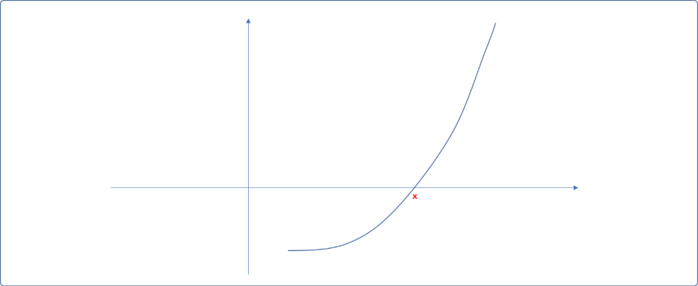
现在，看看牛顿是如何使用微积分思想找到这个解的。只能说，牛逼人的思想非我等凡人能比拟。
2.1 基本思想
- 在横坐标上找一
x0点（也称预测点），并绘制(x0,f(x0))点与曲线相交的切线。切线和横坐轴相交于x1。
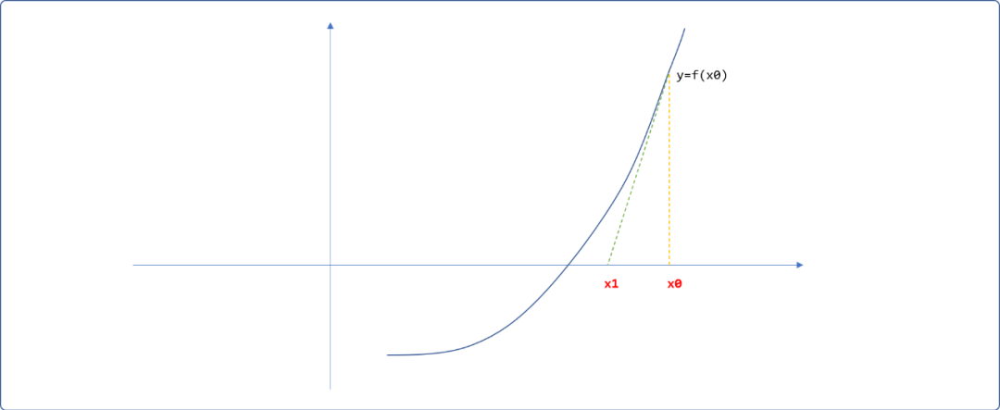
- 再绘制
(x1,f(x1))点与曲线的切线，此时，切线与横轴相交于x2，继续绘制出(x2,f(x2))与曲线的交点……如此迭代，直到切线与横坐标轴的交点与曲线和横坐标的交点重合，此交合点便是曲线的解。是不是很简单，为什么是牛顿发现的，而不是我？
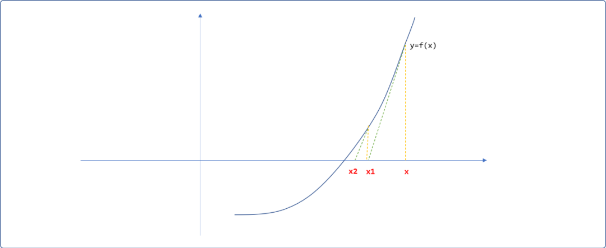
x0的选择并不完全是任意的，也应该有基本的推理依据。预测点是关键，如果与真实值相差太远，则迭代次数会很大。理论上，只要预测点给的好，且此方程式满足牛顿迭代算法的前提条件，无论迭代多少次，解必能找出来，无非就是时间的长短。
2.2 如何求解 x1
现在的问题转向到如何通过已知的x0值计算出x1的值？是否存在一个标准的公式？
现在就是微积分上场的时候，请屏住呼吸！真相将昭然若揭。
- 在
x0 和 x1之间选择任一点x，从此点向上绘制垂直线，假设与切线相交的位置的纵坐标值为y。并绘制如下箭头所指的三角形。
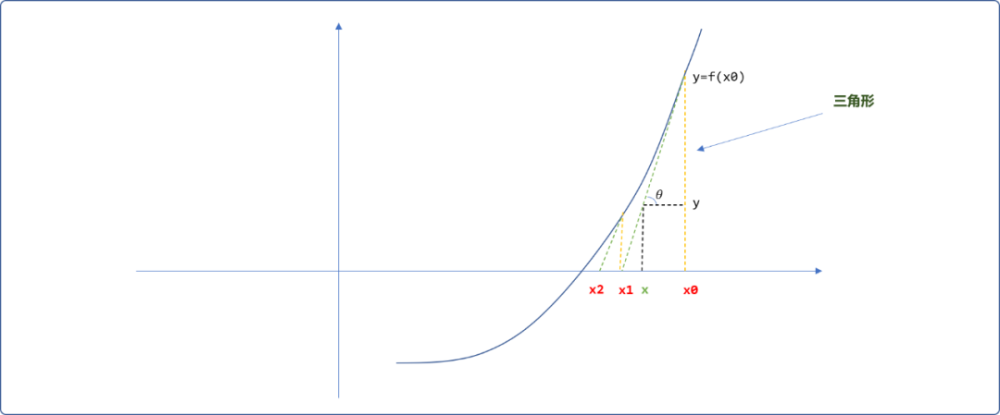
- 三角形为直角三角形，学过三角函数的都知道，会存在如下的关系。
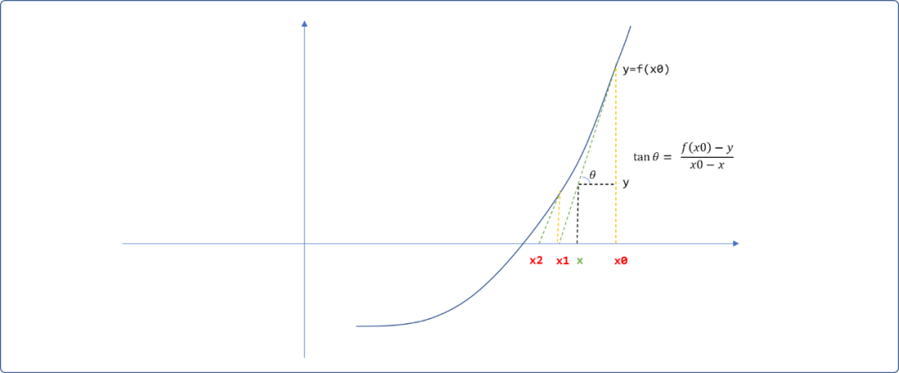
- 现在轮到
微积分知识上场，它告诉我们，其中的tan0就是切线与曲线的斜率。根据微积分原理，斜率即是x0在曲线上的导数，可以根据导函数计算出来，即tan0=f'(x0)。太完美了，如此公式可演变如下：
继续化丽的转身后，它便如涅槃重生一样，破茧成如下人见人爱的模样：
- 因切线与横坐标轴相交的位置
y=0，从而便可以求得x1的值：
同理，求得 x2的值。
最后，可以抽象出牛顿迭代公式，即迭代法中的核心子逻辑。
只能说，太神奇了！计算机中的算法一词来源于数学，计算机学科本也源自数学学科，因一脉相承，说计算机的尽头是数学，一点不假，计算机只是工具而已。
2.3 收敛性
什么是牛顿迭代算法的收敛性？
通俗理解，选定预测点后，也许中间会有偏离，或许会忽远忽近，但无论如何最终都能靠近真实解，这便是收敛性。
换一句话而言，如果通过预测点，无法收敛到真实值，则无法求出解。
如果预测点为曲线的驻点，很不幸，由此点绘制的切线不会和横坐标轴相交，是无法求方程式的解。
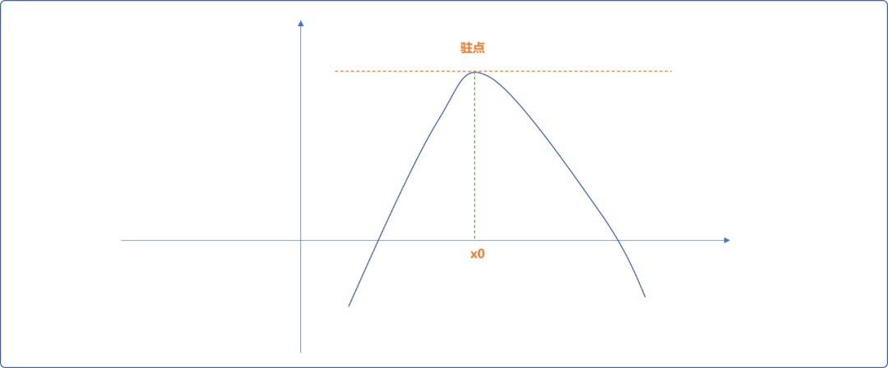
另，如果收敛越来越远，也不能使用牛顿迭代法。如下图所示。
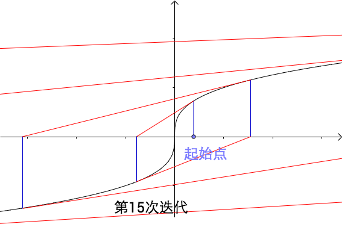
怎样的方程式能使用牛顿迭代法，牛顿迭代法已经给出了答案，可自行查阅一下。
2.4 编码实现
现在来一个具体的案例：求解如下方程式。
f(x)=x4-3x3+1.5x2-4
牛顿迭代法中的子逻辑需要求解函数的导函数。受限于篇幅，导函数的推导在此不负赘。这里仅给出常见的基本函数的导函数公式，再根据导函数生成法则，直接找到求解函数的导函数 f‘(x)=4x3-9x2+3x。
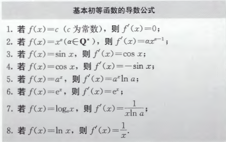
Tips：如果对微积分或导函数不是很了解，建议查阅一下高等数学书。
牛顿迭代法可以使用递归和非递归方案实现。
因初始值为预测值，从而可能导致递归或迭代的次数会很大。前文说过，牛顿迭代法并不是一个解非线性方程式的通用算法，也就是说使用牛顿迭代法可能得不到解。
故最好在编写算法时添加如下的辅助手段：
- 保证函数在整个定义域内最好是
二阶可导的。 预测点会影响计算量，可限制迭代的次数，当在此限制下不能得到结果时，则增加其它的判断手段试错。
2.4.1 递归实现
#include <iostream>
#include <cmath>
using namespace std;
/*
* 原函数 f(x)=x^4-3x^3+1.5x^2-4
*/
double yfun(double x) {
return pow(x,4)-3*pow(x,3)+1.5*pow(x,2)-4.0;
}
/*
* 导函数 f'(x)=4*x^3-9*x^2+3x
*/
double dfun(double x) {
return 4*pow(x,3)-9*pow(x,2)+3*x;
}
/*
* 递归实现牛顿迭代法
* val:预测值
* precision:精度
* deep:递归深度
*/
double newtonIter(double val,double precision,int deep) {
if(deep==0)return -1;
//求解
double res=yfun(val);
if( res==0.0 || fabs(res) < precision )
//如果找到
return val;
//根据牛顿迭代公式修正 val 值
val=val-res/dfun(val);
//递归
return newtonIter(val,precision,deep);
}
/*
*非递归实现
*/
double newtonIter_(double val,double jd) {
double res=yfun(val);
while( !(res==0.0 || fabs(res) <jd) ) {
//根据牛顿迭代公式修正 val 值
val=val-yfun(val)/dfun(val);
res=yfun(val);
}
//如果找到
return val;
}
int main() {
double val=0.0;
int deep=0;
double precision=0.0;
cout<<"请输入预测值"<<endl;
cin>>val;
cout<<"递归或迭代的最大次数："<<endl;
cin>>deep;
cout<<"输入精度："<<endl;
cin>>precision;
double res=newtonIter(val,precision,deep);
cout<<res;
return 0;
}
测试：
当 x=0其倒数为 0，说明为驻点，不能做为预测值。
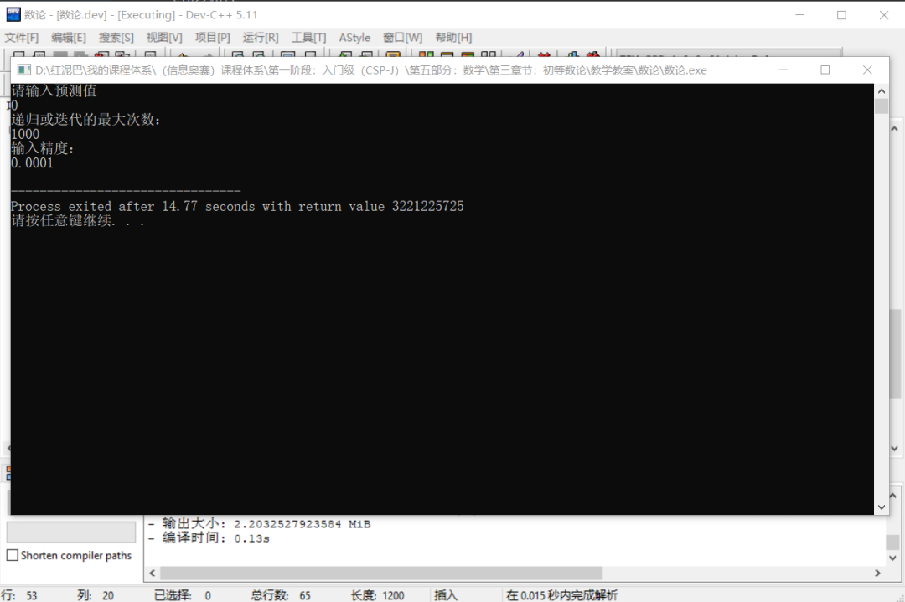
再试着把把 2代入导函数，其导数为 2，可以作为预测值试试：
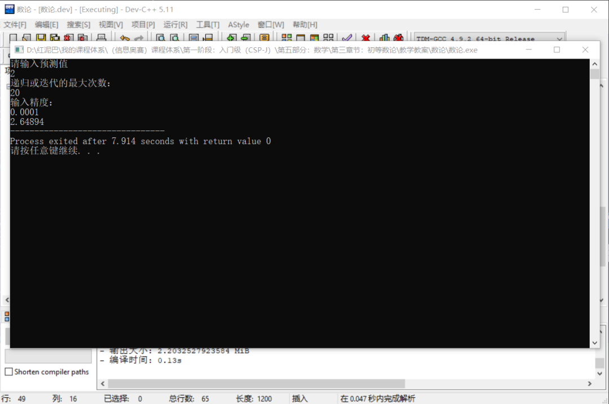
正向测试一下，把2.64894代入原函数，可知是符合精度要求的近似值。
2.4.2 非递归实现
//省略……
double newtonIter_(double val,double precision,int deep) {
int i=0;
double res=0;
while( 1 ) {
res=yfun(val);
if( res==0.0 || fabs(res) <precision)
return val;
//根据牛顿迭代公式修正 val 值
val=val-yfun(val)/dfun(val);
i++;
if(i==deep)
return -1;
}
//没有
return -1;
}
3. 二分迭代法
二分迭代法使用了二分算法思想求解非线性方程式。
下面要求使用二分迭代法求解 2x3-5x-1=0 方程式，且要求误差不能大于10e-5。二分迭代法也只是近似求解算法。
3.1 基本思想
预测或初步判断值的范围。
- 如上述方程，把
0代入方程式，可知f(0)=-1，然后把1代入方程式，则f(1)=-4，再把2代入方程式，得到f(2)=5。如下绘制函数在[0,1,2] 3个点之间的大致走势图，分析后可知在[1,2]之间必然会有一个解。
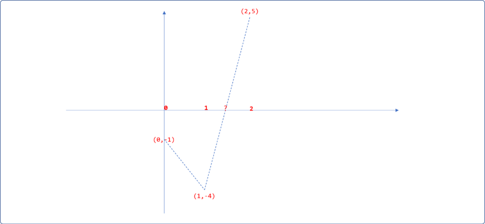
- 使用二分思想，计算出
[1,2]之间的中间点x=(1+2)/2=1.5。把1.5代入方程式得到函数值为f(1.5)=-1.75。重新修正一下走势图。因为f(1.5)*f(1)>0，说明f(1.5)和f(1)在同一边，其真实值应该在1.5的右边。如果f(1.5)*f(1)<0，则说明f(1.5)和f(1)在横坐标的两侧，说明真实值应该在1.5的左边。分析后可知直实值缩小在[1.5,2]之间。
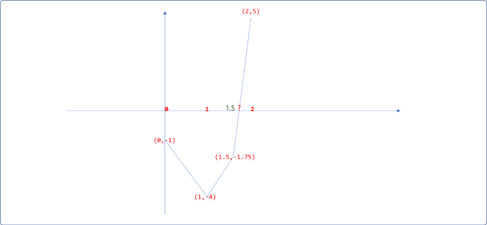
- 再计算
[1.5,2]之间的中间点x=(1.5+2)/2=1.75，把1.75代入方程式得f(1.75)=0.96875，发现值已经慢慢接近0。分析可知，真实值应该在[1.5，1.75]之间，继续二分迭代，便可以找到近似值。
3.2 编程实现
二分迭代法同样有递归和非递归两种方案。
3.2.1 非递归
#include <iostream>
#include <cmath>
using namespace std;
/*
* 原函数
*/
double yfun(double x) {
return 2*pow(x,3)-5*x-1;
}
/*
* 非递归实现二分迭代法，
* left:左边界
* right:右边界
* precision:精度
* 为了避免找不到结果，可以限制迭代次数。
*/
double binaryIter(double left,double right,double precision) {
//计算左边界的函数值
double leftVal=yfun(left);
//右边界的函数值
double rightVal=yfun(right);
while(true) {
//中间位置
double midPos=(left+right) /2;
//函数值
double midVal= yfun(midPos);
if( midVal==0.0 || fabs(midVal) < precision ) {
//找到
return midPos;
} else if( leftVal*midVal>0 ) {
//真实值应该在 midPos 的右边
left=midPos;
} else {
right=midPos;
}
}
}
int main() {
cout<<"左边界"<<endl;
double left=0.0;
cin>>left;
cout<<"右边界"<<endl;
double right=0.0;
cin>>right;
cout<<"精度："<<endl;
double precision=0;
cin>>precision;
double res= binaryIter(left,right,precision);
cout<<res;
return 0;
}
输出结果：
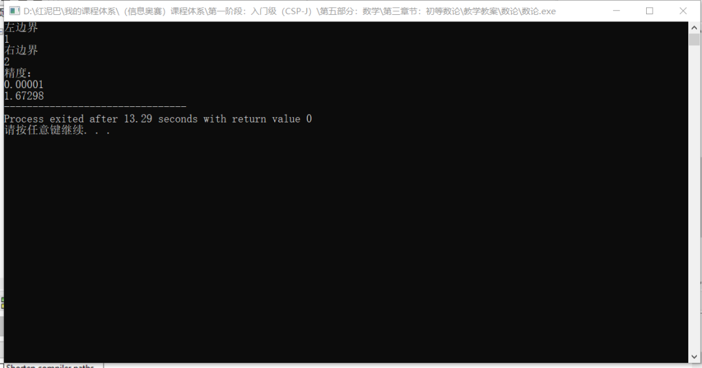
根据前面的函数走势图，可以直观感觉到在横坐标轴的左边还有一个值。把-1代入函数，知f(-1)=2，可预测在[-1,0]之间还有一个近似值。
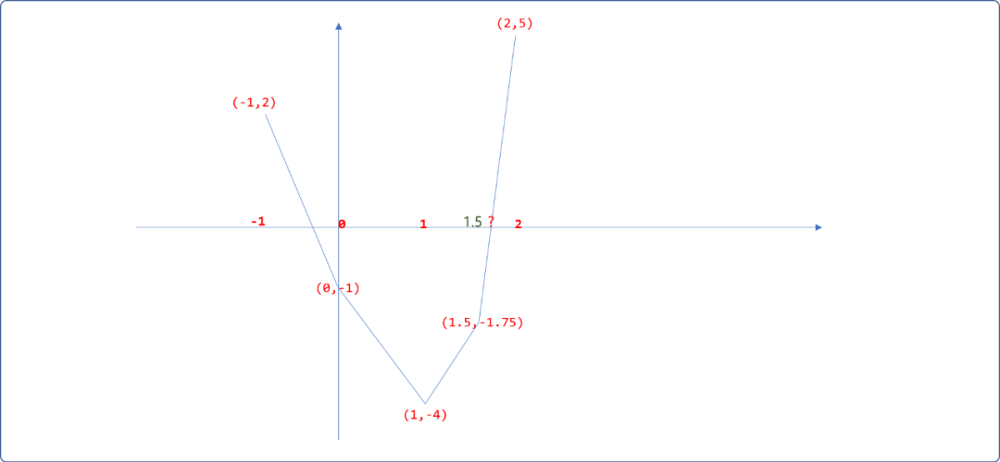
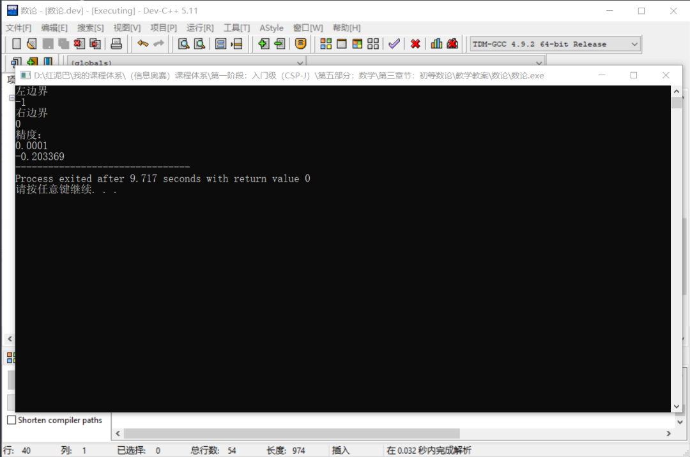
同样，可以使用二分迭代法求解上文的方程式 f(x)=x4-3x3+1.5x2-4 的解：
很容易预测出函数在[2,3]之间有解。只需要修改 yfun函数。
其结果和牛顿迭代法计算出来的一样。
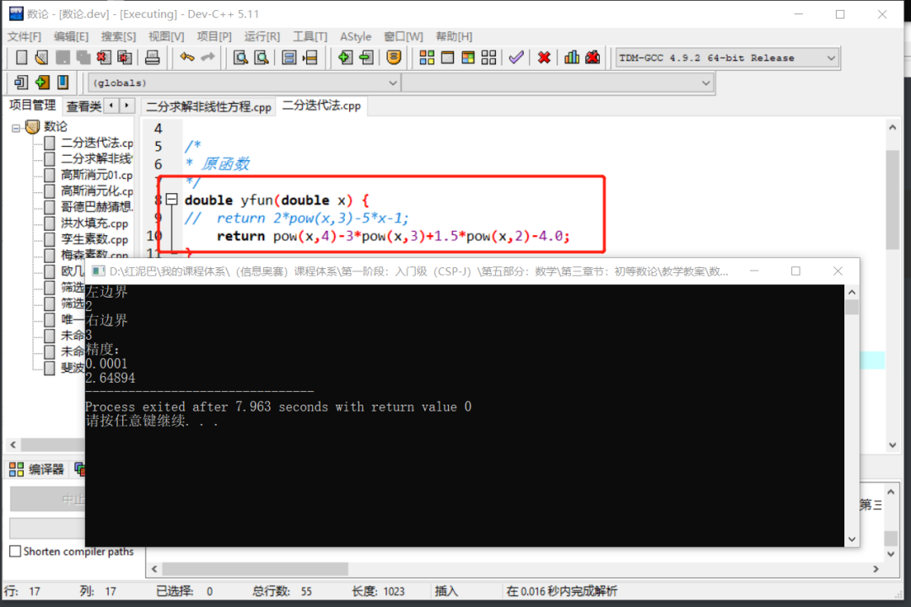
3.2.2 递归方案
最后提供二分迭代法的递归实现。
double binaryIter_(double left,double right,double precision) {
if(left>right)return -1;
//计算左边界的函数值
double leftVal=yfun(left);
//右边界的函数值
double rightVal=yfun(right);
//中间位置
double midPos=(left+right) /2;
//函数值
double midVal= yfun(midPos);
if( midVal==0.0 || fabs(midVal) < precision ) {
//找到
return midPos;
} else if( leftVal*midVal>0 ) {
//真实值应该在 midPos 的右边
return binaryIter_(midPos,right,precision);
} else {
return binaryIter_(left,midPos,precision);
}
}
４. 总结
本文讲解了牛顿、二分迭代求解非线性方程。虽然牛顿迭代没有二分迭代那么容易理解，但其功能却是强大很多。